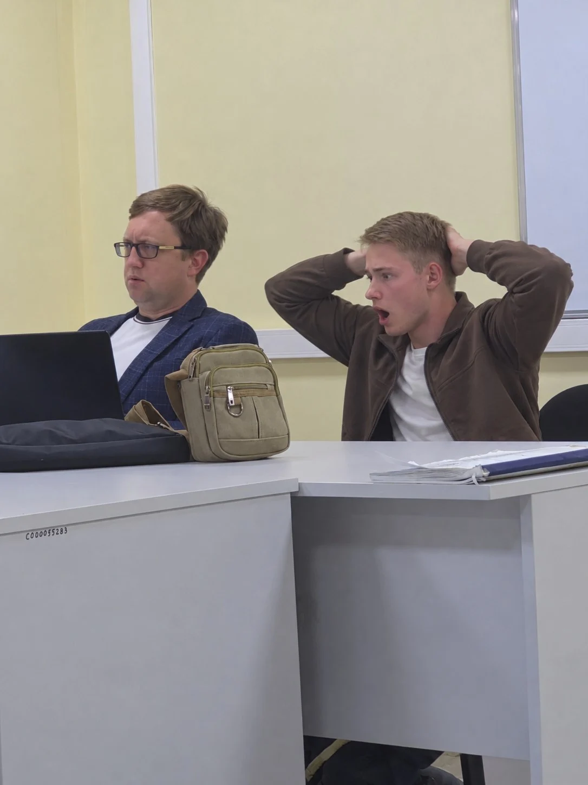
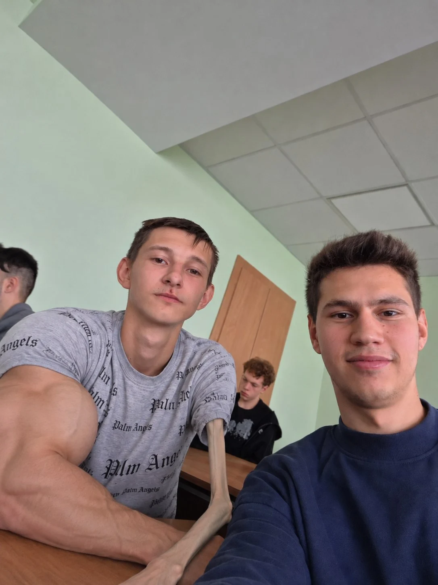

Егор Бирюков

Несмотря на то, что я являюсь интровертом тяжёлой стадии, у меня есть много друзей как в группе, так и за её пределами. Вот список моих друзей-одногруппников, которых я вижу практически каждый день на учёбе, а также в сети в Telegram.

